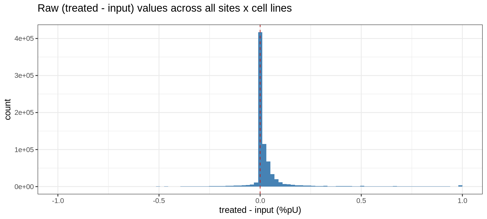
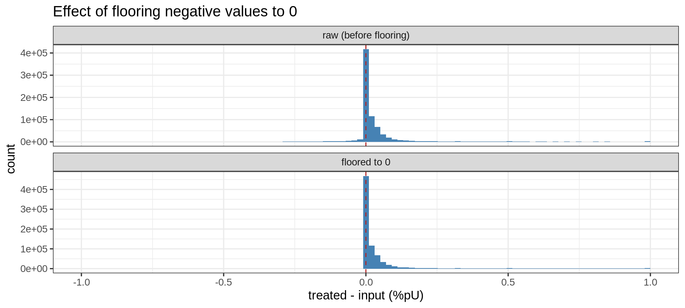
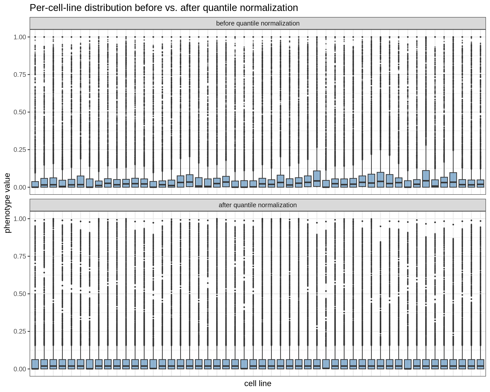
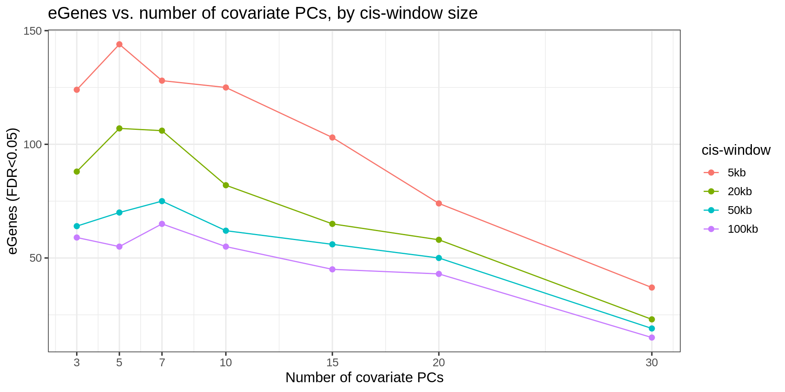
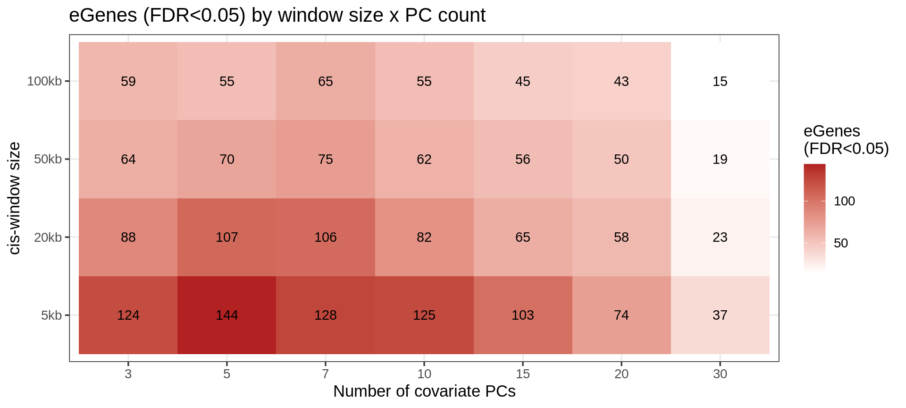
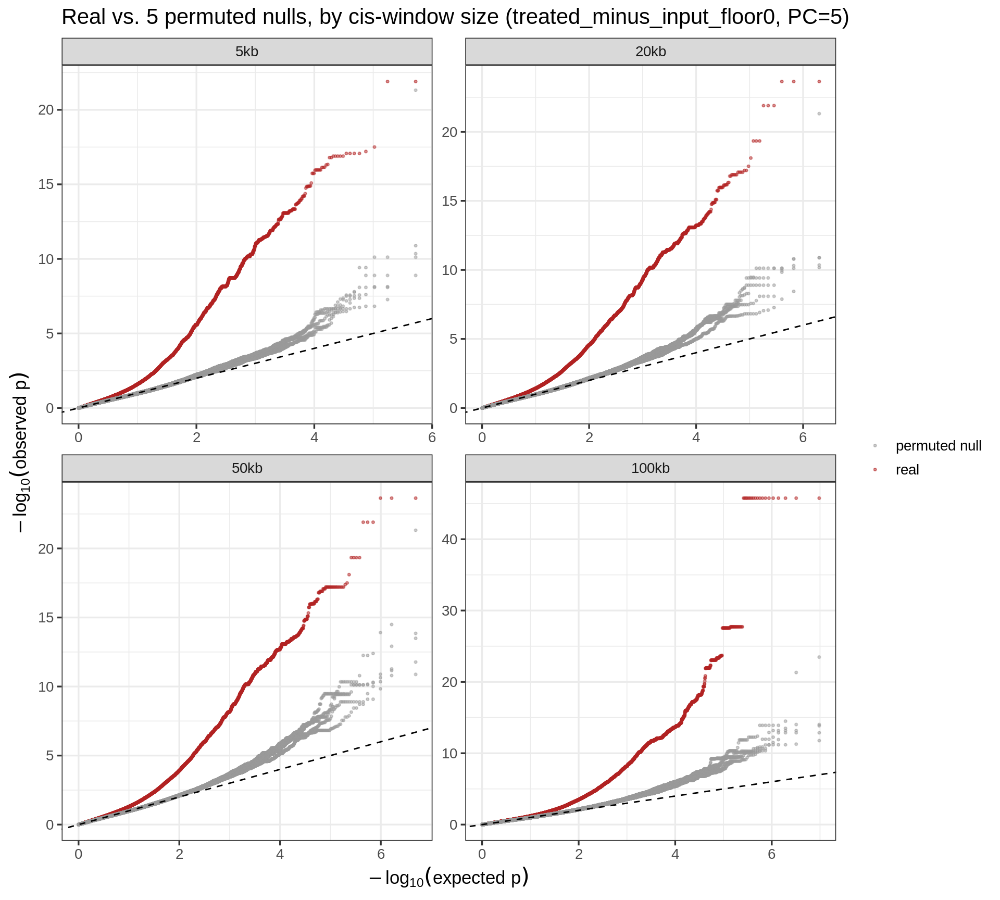

Last updated: 2026-07-09
Checks: 6 1
Knit directory: pumseq/
This reproducible R Markdown analysis was created with workflowr (version 1.7.0). The Checks tab describes the reproducibility checks that were applied when the results were created. The Past versions tab lists the development history.
The R Markdown is untracked by Git. To know which version of the R
Markdown file created these results, you’ll want to first commit it to
the Git repo. If you’re still working on the analysis, you can ignore
this warning. When you’re finished, you can run
wflow_publish to commit the R Markdown file and build the
HTML.
Great job! The global environment was empty. Objects defined in the global environment can affect the analysis in your R Markdown file in unknown ways. For reproduciblity it’s best to always run the code in an empty environment.
The command set.seed(20260202) was run prior to running
the code in the R Markdown file. Setting a seed ensures that any results
that rely on randomness, e.g. subsampling or permutations, are
reproducible.
Great job! Recording the operating system, R version, and package versions is critical for reproducibility.
Nice! There were no cached chunks for this analysis, so you can be confident that you successfully produced the results during this run.
Great job! Using relative paths to the files within your workflowr project makes it easier to run your code on other machines.
Great! You are using Git for version control. Tracking code development and connecting the code version to the results is critical for reproducibility.
The results in this page were generated with repository version e54b7a5. See the Past versions tab to see a history of the changes made to the R Markdown and HTML files.
Note that you need to be careful to ensure that all relevant files for
the analysis have been committed to Git prior to generating the results
(you can use wflow_publish or
wflow_git_commit). workflowr only checks the R Markdown
file, but you know if there are other scripts or data files that it
depends on. Below is the status of the Git repository when the results
were generated:
Ignored files:
Ignored: analysis/qtl_mapping_summary_cache/
Untracked files:
Untracked: analysis/qtl_mapping_summary_floor0_quantile.Rmd
Untracked: render_qtl_summary_51666527.out
Unstaged changes:
Deleted: analysis/qtl_mapping_summary.Rmd
Modified: render_qtl_summary.sbatch
Note that any generated files, e.g. HTML, png, CSS, etc., are not included in this status report because it is ok for generated content to have uncommitted changes.
There are no past versions. Publish this analysis with
wflow_publish() to start tracking its development.
library(data.table)
library(dplyr)
library(ggplot2)
library(qvalue)
library(arrow)
library(patchwork)
knitr::opts_chunk$set(
echo = TRUE, warning = FALSE, message = FALSE,
fig.align = "center", fig.width = 10, fig.height = 6
)
PROJECT_DIR <- "/project/xinhe/xsun/pumseq"This page summarizes where cis-QTL mapping for the treated − input pseudouridylation (%pU) phenotype currently stands: the data issue, how the phenotype is now built and normalized, how the QTL scan is set up, and what the results and calibration checks look like.
The phenotype of interest is the differential %pU signal — %pU in the treated sample minus %pU in the matched input (untreated) sample, at each pseudouridylation site, for each of the 50 genotyped cell lines. Under the union site-calling strategy, a site enters the analysis if it clears a significance threshold (FDR < 0.01, rate-difference > 0.05, depth>=20) in at least one cell line; every other cell line’s raw %pU value at that site is then reported as-is, with no per-cell-line filter.
Conceptually, treated - input should not be negative:
input is the background/baseline rate, and treatment should only add
signal on top of it. But because most cell lines don’t necessarily show
real signal at a site that was only called significant in some
other cell line, the raw per-cell-line, per-site difference is
often small, noisy, and sometimes negative.
UNION_DIR <- file.path(PROJECT_DIR, "pumseq_processed/union/all51_mRNA")
ratio_treated <- fread(file.path(UNION_DIR, "union_mRNA.global_sites.ratio_matrix.txt.gz"),
colClasses = list(character = c("ref", "strand")))
ratio_input <- fread(file.path(UNION_DIR, "union_mRNA.global_sites.ratio_matrix_unt.txt.gz"),
colClasses = list(character = c("ref", "strand")))
id_cols <- c("ref", "pos", "strand")
cl_cols <- setdiff(colnames(ratio_treated), id_cols)
stopifnot(identical(cl_cols, setdiff(colnames(ratio_input), id_cols)))
diff_mat <- as.matrix(ratio_treated[, ..cl_cols]) - as.matrix(ratio_input[, ..cl_cols])
diff_vec <- diff_mat[!is.na(diff_mat)]
diff_summary <- data.table(
n_total = length(diff_vec),
n_negative = sum(diff_vec < 0),
`pct_<_0` = round(100 * mean(diff_vec < 0), 1),
`pct_<=_0` = round(100 * mean(diff_vec <= 0), 1),
median = round(median(diff_vec), 4),
min = round(min(diff_vec), 3),
max = round(max(diff_vec), 3)
)
knitr::kable(diff_summary, caption = "per-site (treated - input) values across all union sites")| n_total | n_negative | pct_<_0 | pct_<=_0 | median | min | max |
|---|---|---|---|---|---|---|
| 782316 | 89530 | 11.4 | 54.5 | 0 | -1 | 1 |
ggplot(data.table(diff = diff_vec), aes(x = diff)) +
geom_histogram(bins = 100, fill = "steelblue", color = NA) +
geom_vline(xintercept = 0, color = "firebrick", linetype = "dashed") +
labs(x = "treated - input (%pU)", y = "count",
title = "Raw (treated - input) values across all sites x cell lines",
subtitle = sprintf("%.1f%% of %s values are negative; %.1f%% are <= 0",
diff_summary$pct_negative, format(diff_summary$n_total, big.mark=","),
diff_summary$pct_le_0)) +
theme_bw(base_size = 13)
Since a negative value isn’t biologically meaningful, it’s treated as noise around “no detectable signal” rather than discarded outright.
If we require positivity in every cell line at a site, it keeps only ~700-800 of 5,928 sites (far too aggressive). Instead, negative values are simply floored to 0, keeping every site:
diff_floored <- pmax(diff_vec, 0)
plot_dt <- rbind(
data.table(value = diff_vec, version = "raw (before flooring)"),
data.table(value = diff_floored, version = "floored to 0")
)
plot_dt[, version := factor(version, levels = c("raw (before flooring)", "floored to 0"))]
ggplot(plot_dt, aes(x = value)) +
geom_histogram(bins = 100, fill = "steelblue", color = NA) +
geom_vline(xintercept = 0, color = "firebrick", linetype = "dashed") +
facet_wrap(~ version, ncol = 1, scales = "free_y") +
labs(x = "treated - input (%pU)", y = "count",
title = "Effect of flooring negative values to 0") +
theme_bw(base_size = 13)
The floored value (pmax(treated - input, 0)) is what
feeds every downstream step below.
After flooring, sites are restricted to the union set called in >= 2 cell lines and to autosomes (chr1-22), missing values are imputed with the site-level median, and the resulting matrix is quantile-normalized across cell lines — forcing every cell line to share the same marginal distribution, so that differences in overall signal level or spread between cell lines (technical, not biological) don’t drive spurious associations.
PHENO_DIR <- file.path(PROJECT_DIR, "pumseq_processed/psi_qtl/phenotype/union_ncalled2/treated_minus_input_floor0/quantile")
sites_info <- fread(file.path(PHENO_DIR, "sites_info.txt.gz"),
colClasses = list(character = c("ref", "strand")))
genotype_map <- fread(file.path(PROJECT_DIR, "pumseq_processed/psi_qtl/genotype/sample_id_map.txt"))
cl_genotyped <- intersect(cl_cols, genotype_map$CL_id)
setkey(ratio_treated, ref, pos, strand)
setkey(ratio_input, ref, pos, strand)
before_treated <- ratio_treated[sites_info[, .(ref, pos, strand)], on = c("ref", "pos", "strand")]
before_input <- ratio_input[sites_info[, .(ref, pos, strand)], on = c("ref", "pos", "strand")]
before_mat <- pmax(as.matrix(before_treated[, ..cl_genotyped]) - as.matrix(before_input[, ..cl_genotyped]), 0)
after_mat <- as.matrix(fread(file.path(PHENO_DIR, "phenotype_matrix.txt.gz"))[, ..cl_genotyped])
box_dt <- rbind(
melt(as.data.table(before_mat), measure.vars = cl_genotyped)[, version := "before quantile normalization"],
melt(as.data.table(after_mat), measure.vars = cl_genotyped)[, version := "after quantile normalization"]
)
box_dt[, version := factor(version, levels = c("before quantile normalization", "after quantile normalization"))]
ggplot(box_dt[!is.na(value)], aes(x = variable, y = value)) +
geom_boxplot(outlier.size = 0.3, fill = "steelblue", alpha = 0.6) +
facet_wrap(~ version, ncol = 1, scales = "free_y") +
labs(x = "cell line", y = "phenotype value",
title = "Per-cell-line distribution before vs. after quantile normalization") +
theme_bw(base_size = 12) +
theme(axis.text.x = element_blank(), axis.ticks.x = element_blank())
After normalization, every cell line’s marginal distribution is identical by construction — the boxplots collapse to the same shape and spread, so any remaining site-to-site variation is what QTL mapping tests against genotype.
cis-QTL mapping is done with tensorQTL
(tensorQTL reproduces the same beta-approximated permutation statistics,
just faster). For each phenotype site, both modes are run:
cis_nominal (nominal association p-value for every variant
in the window) and cis (permutation pass, one best-hit
p-value per site, corrected via a beta-distribution approximation for
the number of variants tested).
Two things are swept to characterize the result:
That’s a 7 x 4 grid, each cell a separate tensorQTL run, on the floored, quantile-normalized phenotype above.
RESULTS_ROOT <- file.path(PROJECT_DIR, "pumseq_processed/psi_qtl/qtl_results/union_ncalled2")
STRATEGY <- "treated_minus_input_floor0"
PC_COUNTS <- c(3, 5, 7, 10, 15, 20, 30)
WINDOWS_BP <- c(5000, 20000, 50000, 100000)
compute_qval <- function(p) {
q <- tryCatch(qvalue::qvalue(p)$qvalues, error = function(e) NULL)
if (is.null(q)) q <- p.adjust(p, method = "BH")
q
}
read_one <- function(pc, window) {
window_dir <- paste0("window", format(window, scientific = FALSE), "bp/")
f <- file.path(RESULTS_ROOT, STRATEGY, "quantile", window_dir, paste0("pcs", pc),
paste0("pumseq_", STRATEGY, ".cis_qtl.txt.gz"))
if (!file.exists(f)) return(NULL)
dt <- fread(f, header = TRUE, sep = "\t")
dt[, `:=`(n_pcs = pc, window_bp = window)]
dt
}
grid <- CJ(pc = PC_COUNTS, window = WINDOWS_BP)
loaded <- mapply(read_one, grid$pc, grid$window, SIMPLIFY = FALSE)
stopifnot(sum(sapply(loaded, is.null)) == 0)
cis_qtl <- rbindlist(loaded)
cis_qtl[, qval := compute_qval(pval_beta), by = .(n_pcs, window_bp)]
summary_tbl <- cis_qtl[, .(eGenes_FDR05 = sum(qval < 0.05, na.rm = TRUE)), by = .(window_bp, n_pcs)][order(window_bp, n_pcs)]
summary_tbl[, window_lab := factor(paste0(window_bp / 1000, "kb"), levels = paste0(WINDOWS_BP / 1000, "kb"))]ggplot(summary_tbl, aes(x = n_pcs, y = eGenes_FDR05, color = window_lab)) +
geom_line() +
geom_point(size = 2) +
scale_x_continuous(breaks = PC_COUNTS) +
labs(x = "Number of covariate PCs", y = "eGenes (FDR<0.05)", color = "cis-window",
title = "eGenes vs. number of covariate PCs, by cis-window size") +
theme_bw(base_size = 13)
eGene counts fall off steadily as more covariate PCs are added at every window size
ggplot(summary_tbl, aes(x = factor(n_pcs, levels = PC_COUNTS), y = window_lab, fill = eGenes_FDR05)) +
geom_tile() +
geom_text(aes(label = eGenes_FDR05), size = 3.8) +
scale_fill_gradient(low = "white", high = "firebrick") +
labs(x = "Number of covariate PCs", y = "cis-window size", fill = "eGenes\n(FDR<0.05)",
title = "eGenes (FDR<0.05) by window size x PC count") +
theme_bw(base_size = 13)
Both window size and PC count matter: smaller windows and fewer PCs each independently yield more eGenes, with the largest counts in the top-left of the heatmap (5-20kb, 3-7 PCs).
The check: break the true genotype-phenotype relationship by permuting which individual’s phenotype and covariates get tested against which individual’s genotype (5 independent random permutations), then rerun the nominal association test on each permuted copy exactly as on the real data, at PC=5. If the real result’s calibration is genuine, the permuted nulls should track the null diagonal in a QQ plot regardless of window size
N_PCS_PERM <- 5
CHRS <- 1:22
N_PERM <- 5
read_nominal <- function(metric, prefix) {
dir <- file.path(RESULTS_ROOT, metric, "quantile", paste0("pcs", N_PCS_PERM))
rbindlist(lapply(CHRS, function(chr) {
f <- file.path(dir, paste0(prefix, ".cis_qtl_pairs.", chr, ".parquet"))
as.data.table(read_parquet(f, col_select = c("pval_nominal", "start_distance")))
}))
}
real_dt <- read_nominal(STRATEGY, paste0("pumseq_", STRATEGY))
perm_dt <- lapply(seq_len(N_PERM), function(s) {
metric <- paste0(STRATEGY, "_perm", s)
read_nominal(metric, paste0("pumseq_", metric))
})
compute_lambda <- function(p) median(qchisq(1 - p, df = 1), na.rm = TRUE) / qchisq(0.5, df = 1)
lambda_by_window <- rbindlist(lapply(WINDOWS_BP, function(w) {
real_p <- real_dt[abs(start_distance) <= w, pval_nominal]
perm_p <- lapply(perm_dt, function(dt) dt[abs(start_distance) <= w, pval_nominal])
data.table(
window_kb = w / 1000,
dataset = c("real", paste0("permuted seed ", seq_len(N_PERM))),
lambda_gc = c(compute_lambda(real_p), sapply(perm_p, compute_lambda))
)
}))
knitr::kable(
dcast(lambda_by_window, dataset ~ window_kb, value.var = "lambda_gc"),
digits = 3, caption = "Genomic control lambda by cis-window size (kb): real vs. 5 permuted nulls, PC=5"
)| dataset | 5 | 20 | 50 | 100 |
|---|---|---|---|---|
| permuted seed 1 | 1.012 | 1.023 | 1.021 | 1.013 |
| permuted seed 2 | 1.019 | 1.008 | 1.013 | 1.020 |
| permuted seed 3 | 1.084 | 1.065 | 1.051 | 1.042 |
| permuted seed 4 | 1.058 | 1.053 | 1.042 | 1.047 |
| permuted seed 5 | 1.005 | 1.018 | 1.028 | 1.038 |
| real | 1.533 | 1.397 | 1.310 | 1.237 |
thin_qq <- function(p, label, window_kb) {
p <- sort(p)
n <- length(p)
if (n < 2) return(NULL)
idx <- unique(as.integer(10^(seq(log10(1), log10(n), length.out = min(5000, n)))))
data.table(observed = -log10(p[idx]), expected = -log10(ppoints(n)[idx]),
dataset = label, window_kb = window_kb)
}
qq_dt <- rbindlist(lapply(WINDOWS_BP, function(w) {
real_p <- real_dt[abs(start_distance) <= w, pval_nominal]
rbindlist(c(
list(thin_qq(real_p, "real", w / 1000)),
lapply(seq_len(N_PERM), function(s) {
p <- perm_dt[[s]][abs(start_distance) <= w, pval_nominal]
thin_qq(p, paste0("permuted seed ", s), w / 1000)
})
))
}))
qq_dt[, is_real := dataset == "real"]
qq_dt[, window_lab := factor(paste0(window_kb, "kb"), levels = paste0(WINDOWS_BP / 1000, "kb"))]
ggplot(qq_dt, aes(x = expected, y = observed, color = is_real, group = dataset)) +
geom_point(size = 0.6, alpha = 0.5) +
geom_abline(slope = 1, intercept = 0, color = "black", linetype = "dashed") +
facet_wrap(~ window_lab, ncol = 2, scales = "free") +
scale_color_manual(values = c(`TRUE` = "firebrick", `FALSE` = "grey60"),
labels = c(`TRUE` = "real", `FALSE` = "permuted null"), name = NULL) +
labs(x = expression(-log[10](expected~p)), y = expression(-log[10](observed~p)),
title = "Real vs. 5 permuted nulls, by cis-window size (treated_minus_input_floor0, PC=5)") +
theme_bw(base_size = 13)
sessionInfo()R version 4.2.0 (2022-04-22)
Platform: x86_64-pc-linux-gnu (64-bit)
Running under: CentOS Linux 8
Matrix products: default
BLAS/LAPACK: /software/openblas-0.3.13-el8-x86_64/lib/libopenblas_skylakexp-r0.3.13.so
locale:
[1] C
attached base packages:
[1] stats graphics grDevices utils datasets methods base
other attached packages:
[1] patchwork_1.1.1 arrow_13.0.0.1 qvalue_2.32.0 ggplot2_3.4.2
[5] dplyr_1.1.2 data.table_1.14.4 workflowr_1.7.0
loaded via a namespace (and not attached):
[1] tidyselect_1.2.0 xfun_0.38 bslib_0.3.1 purrr_1.0.1
[5] reshape2_1.4.4 splines_4.2.0 colorspace_2.0-3 vctrs_0.6.1
[9] generics_0.1.3 htmltools_0.5.7 yaml_2.3.5 utf8_1.2.2
[13] rlang_1.1.2 R.oo_1.24.0 jquerylib_0.1.4 later_1.3.0
[17] pillar_1.9.0 R.utils_2.11.0 glue_1.6.2 withr_2.5.0
[21] bit64_4.0.5 lifecycle_1.0.4 plyr_1.8.7 stringr_1.5.0
[25] munsell_0.5.0 gtable_0.3.0 R.methodsS3_1.8.1 evaluate_0.15
[29] labeling_0.4.2 knitr_1.42 callr_3.7.0 fastmap_1.1.0
[33] httpuv_1.6.5 ps_1.7.0 fansi_1.0.3 highr_0.9
[37] Rcpp_1.0.11 promises_1.2.0.1 scales_1.2.0 jsonlite_1.8.7
[41] farver_2.1.0 bit_4.0.4 fs_1.5.2 digest_0.6.29
[45] stringi_1.7.6 processx_3.5.3 getPass_0.2-2 rprojroot_2.0.3
[49] grid_4.2.0 cli_3.6.2 tools_4.2.0 magrittr_2.0.3
[53] sass_0.4.1 tibble_3.2.1 whisker_0.4 pkgconfig_2.0.3
[57] assertthat_0.2.1 rmarkdown_2.21 httr_1.4.5 rstudioapi_0.14
[61] R6_2.5.1 git2r_0.30.1 compiler_4.2.0